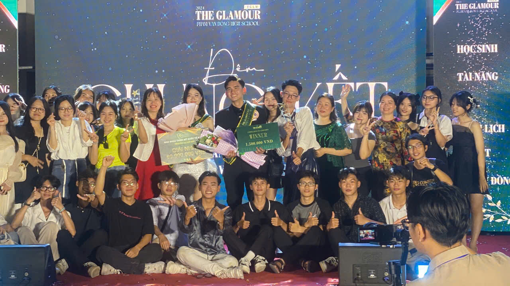
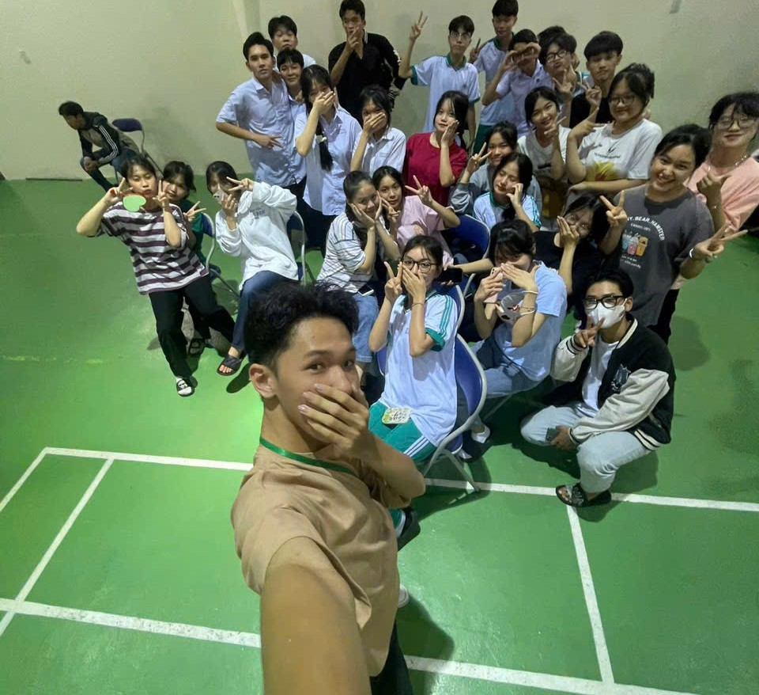
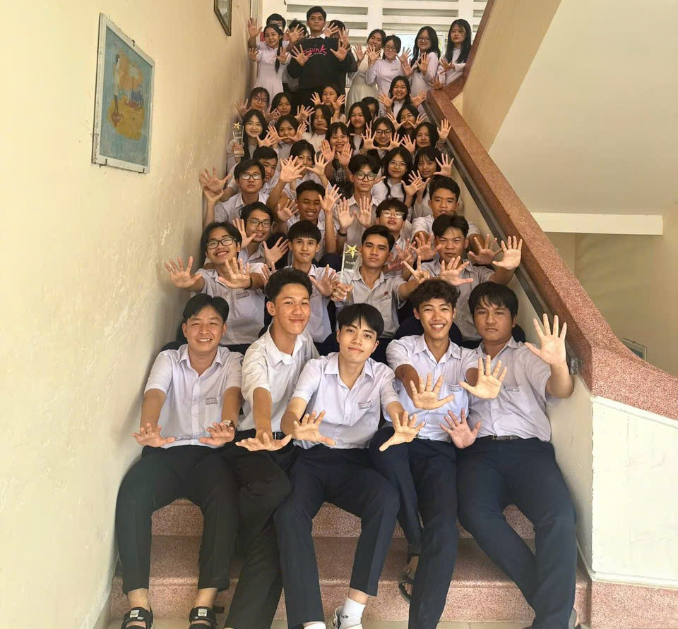
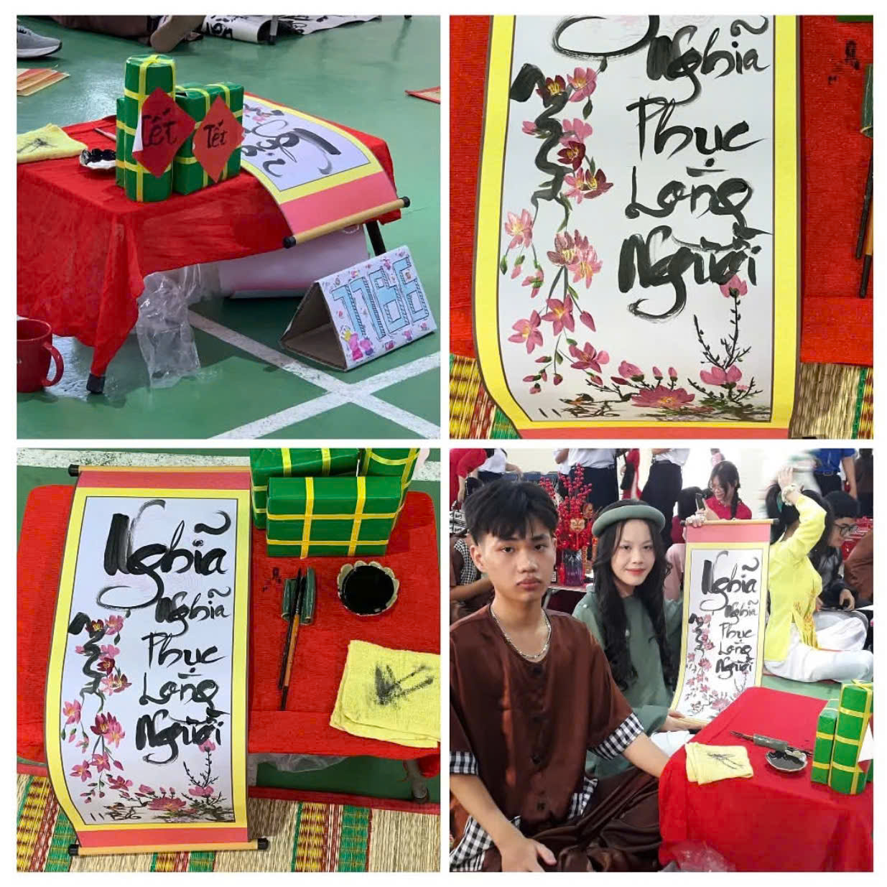
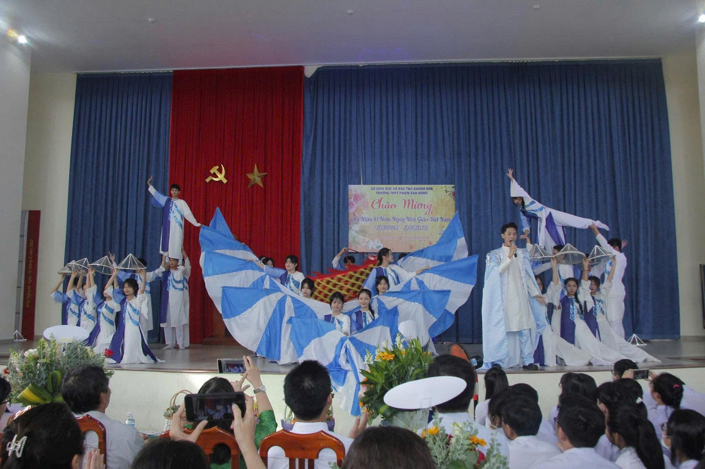
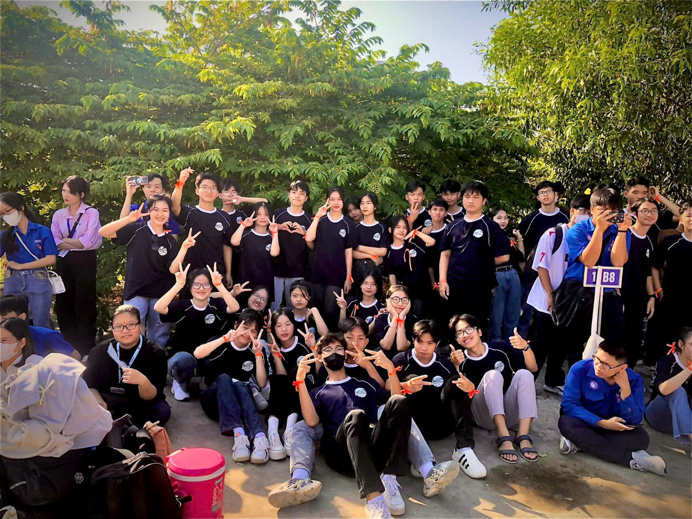
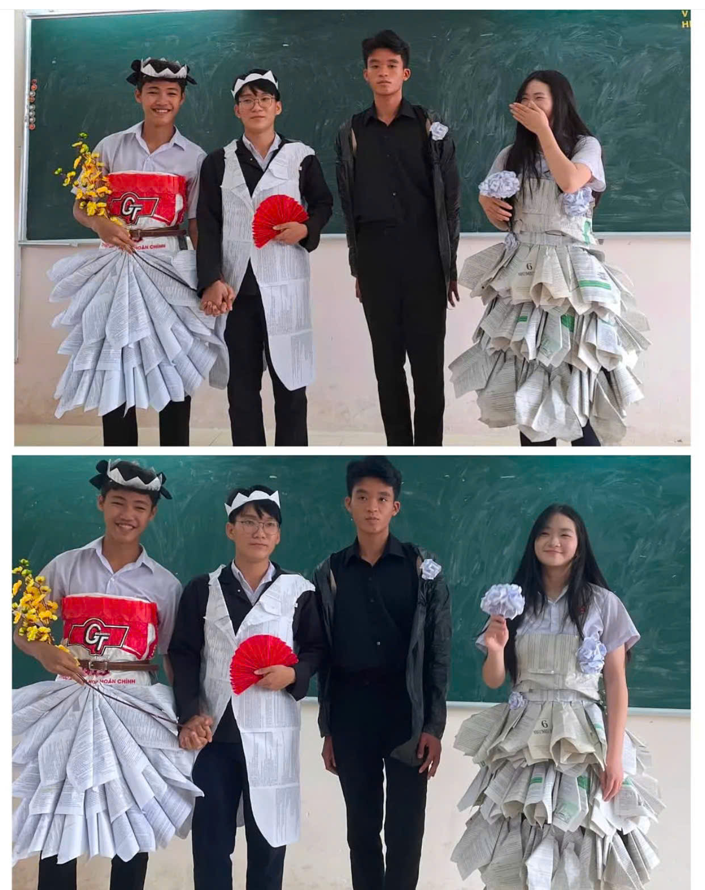

Cánh cửa đầu tiên mở ra hành trình cấp ba. Đó là những ngày bỡ ngỡ, ngại ngùng khi lần đầu gặp nhau trong một lớp học mới, trường học mới. Chúng ta đã cùng nhau trải qua một năm với đầy ắp kỷ niệm – từ buổi lao động đầu tiên, chuyến đi chơi dã ngoại, những trò đùa "bá đạo" trong lớp, đến cả những lần phạt đứng vì nói chuyện riêng. Mỗi khoảnh khắc đều là một mảnh ghép không thể thiếu trong bức tranh thanh xuân tươi đẹp – tuy chỉ là khởi đầu, nhưng lại là nền móng cho những năm tháng đáng nhớ sau này.
Nếu lớp 10 là những bước chân đầu tiên đầy bỡ ngỡ, thì lớp 11 là lúc chúng ta bắt đầu hiểu nhau hơn, gắn bó hơn và trưởng thành hơn từng ngày. Một năm học trôi qua với bao cung bậc cảm xúc: những buổi học căng thẳng trước kỳ thi, những lần chạy deadline bài thuyết trình sát giờ, những buổi sinh hoạt lớp đầy ắp tiếng cười, và cả những lần tranh luận rồi lại cùng nhau làm hòa. Chúng ta đã cùng nhau tạo nên những kỷ niệm đậm sâu hơn – không còn là sự lạ lẫm ban đầu, mà là tình bạn, là sự sẻ chia và thấu hiểu. Lớp 11 không chỉ là hành trình học tập, mà còn là năm đánh dấu sự rực rỡ nhất của thanh xuân, khi mỗi người bắt đầu xác định rõ hơn con đường mình sẽ đi, nhưng vẫn luôn có nhau đồng hành trên từng chặng nhỏ.
Lớp 12 – năm học cuối cùng, nơi ta vừa háo hức chờ đợi tương lai, vừa tiếc nuối những tháng ngày còn lại bên nhau. Mỗi tiết học, mỗi giờ ra chơi, mỗi khoảnh khắc tưởng chừng bình thường lại trở nên đáng nhớ hơn bao giờ hết. Chúng ta đã cùng cười, cùng áp lực, cùng ước mơ và cùng lớn lên. Dù mai này mỗi người một ngả, xin hãy giữ lại trong tim những kỷ niệm của một thời thanh xuân rực rỡ – nơi bắt đầu của những hành trình trưởng thành.
“Chúng ta không biết bao giờ là lần cuối cùng – nên hãy sống và yêu thương như thể mỗi khoảnh khắc đều là cuối cùng.”